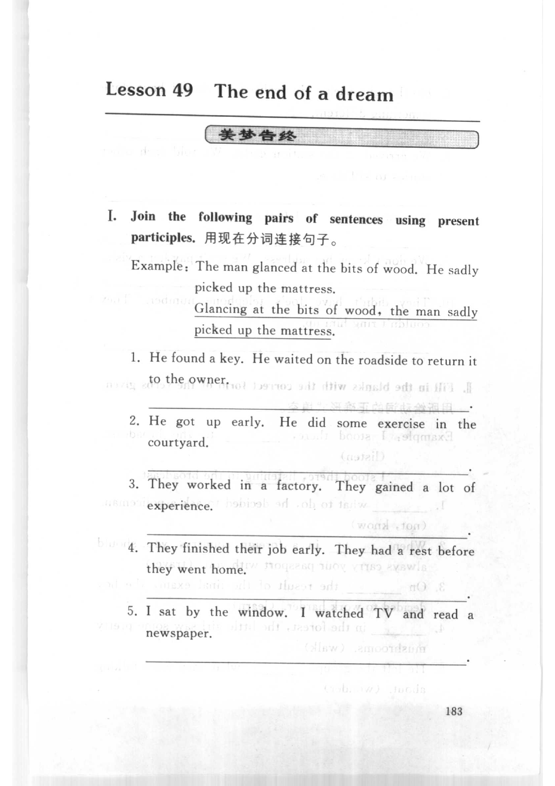
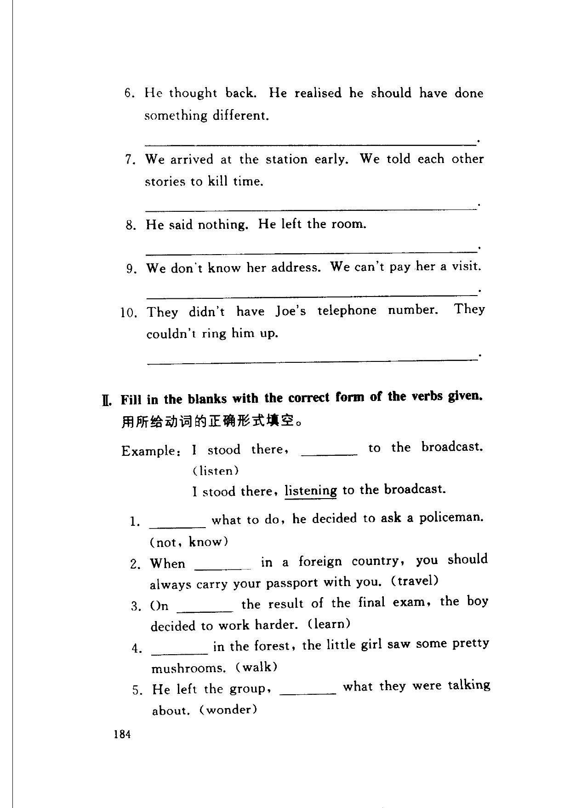
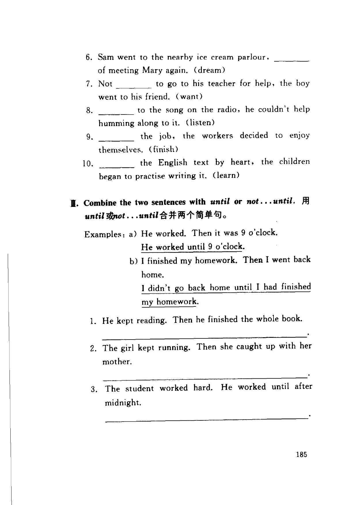
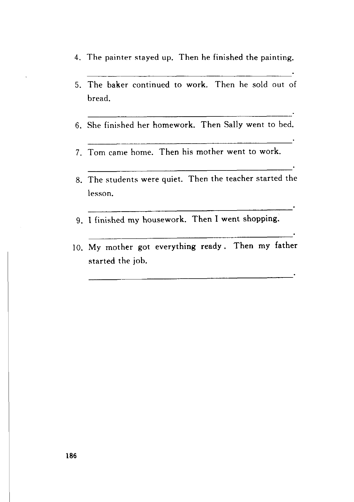

Grammar exercises · 语法练习
I. Join the following pairs of sentences using present participles.
用现在分词连接句子。
Example: The man glanced at the bits of wood. He sadly picked up the mattress.
Glancing at the bits of wood, the man sadly picked up the mattress.
-
I. Present participle — He found a key. He waited on the roadside to return it to the owner.
-
I. Present participle — He got up early. He did some exercise in the courtyard.
-
I. Present participle — They worked in a factory. They gained a lot of experience.
-
I. Present participle — They finished their job early. They had a rest before they went home.
-
I. Present participle — I sat by the window. I watched TV and read a newspaper.
-
I. Present participle — He thought back. He realised he should have done something different.
-
I. Present participle — We arrived at the station early. We told each other stories to kill time.
-
I. Present participle — He said nothing. He left the room.
-
I. Present participle — We don't know her address. We can't pay her a visit.
-
I. Present participle — They didn't have Joe's telephone number. They couldn't ring him up.
II. Fill in the blanks with the correct form of the verbs given.
用所给动词的正确形式填空。
Example: I stood there, ___ to the broadcast. (listen)
I stood there, listening to the broadcast.
-
II. Verb form — what to do, he decided to ask a policeman. (not, know)
-
II. Verb form — When in a foreign country, you should always carry your passport with you. (travel)
-
II. Verb form — On the result of the final exam, the boy decided to work harder. (learn)
-
II. Verb form — in the forest, the little girl saw some pretty mushrooms. (walk)
-
II. Verb form — He left the group, what they were talking about. (wonder)
-
II. Verb form — Sam went to the nearby ice cream parlour, of meeting Mary again. (dream)
-
II. Verb form — Not to go to his teacher for help, the boy went to his friend. (want)
-
II. Verb form — to the song on the radio, he couldn't help humming along to it. (listen)
-
II. Verb form — the job, the workers decided to enjoy themselves. (finish)
-
II. Verb form — the English text by heart, the children began to practise writing it. (learn)
III. Combine the two sentences with until or not…until.
用 until 或 not…until 合并两个简单句。
Examples:
a) He worked. Then it was 9 o'clock.
He worked until 9 o'clock.
b) I finished my homework. Then I went back home.
I didn't go back home until I had finished my homework.
-
III. until / not…until — He kept reading. Then he finished the whole book.
-
III. until / not…until — The girl kept running. Then she caught up with her mother.
-
III. until / not…until — The student worked hard. He worked until after midnight.
-
III. until / not…until — The painter stayed up. Then he finished the painting.
-
III. until / not…until — The baker continued to work. Then he sold out of bread.
-
III. until / not…until — She finished her homework. Then Sally went to bed.
-
III. until / not…until — Tom came home. Then his mother went to work.
-
III. until / not…until — The students were quiet. Then the teacher started the lesson.
-
III. until / not…until — I finished my housework. Then I went shopping.
-
III. until / not…until — My mother got everything ready. Then my father started the job.
Original images · 原图对照
Expand a page to compare it with the transcription. Open the original in a new tab to zoom in.
展开原图核对文字，也可以在新标签页打开原图放大查看。
Book page 183 · Exercise I (present participles, example and items 1–5)
Open original · 打开原图 ↗ Download original · 下载原图


Book page 184 · Exercise I (items 6–10) and Exercise II (correct form of verbs, example and items 1–5)
Open original · 打开原图 ↗ Download original · 下载原图


Book page 185 · Exercise II (items 6–10) and Exercise III (until or not until, examples a/b and items 1–3)
Open original · 打开原图 ↗ Download original · 下载原图


Book page 186 · Exercise III (items 4–10)
Open original · 打开原图 ↗ Download original · 下载原图


Your notes and answers
Use this space for longer responses or exercises that do not have an individual answer box.